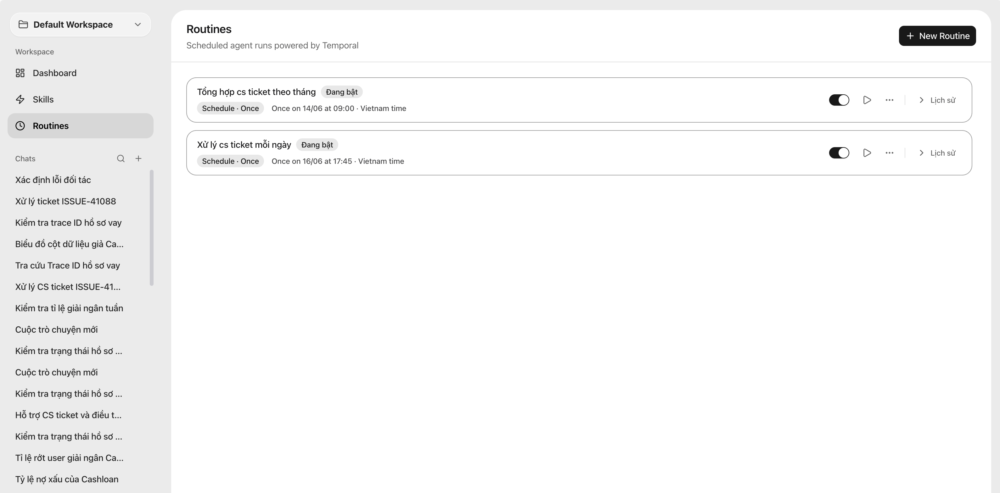

Scheduled workflows
Routine feature
Turn repeated team questions into scheduled agent runs, with each routine keeping its timing, status, and execution history in one workspace.
- Create recurring checks for CS tickets, partner issues, and operational reports.
- Pause, run, or review a routine without leaving the workspace.
- Use run history to trace what happened and when the agent last executed.
01